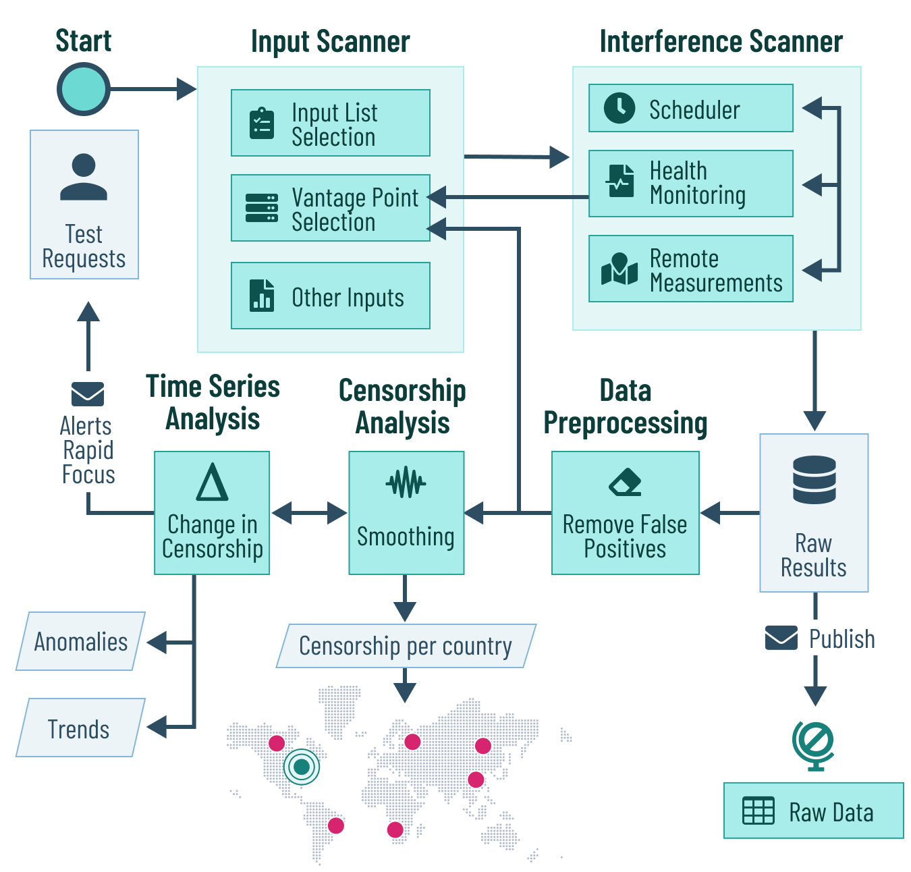

The Censored Planet Observatory uses remote measurement techniques such as Augur, Satellite, Qauck and Hyperquack to run remote censorship measurements for thousands of websites. These techniques use features in existing Internet protocols and infrastructure to interact with remote systems, using their responses to determine the presence or absence of censorship. Thus, we eliminate the need for accessible vantage points or volunteers in different countries, surpassing scale, coverage, continuity, and safety limitations.
The observatory uses a modular design for measuring and analyzing Internet censorship. Censored Planet continously measures reachability to 2,000 websites from more than 95,000 vantage points in 221 countries (a 42-360% increase compared to other measurement platforms). Censored Planet also includes a rapid focus feature that can analyze certain censorship events in depth. Censored Planet finds increasing levels of censorship in 103 countries, and has detected more than 15 key censorship events.

The Censored Planet Observatory uses remote measurement techniques such as Augur, Satellite, Qauck and Hyperquack to run remote censorship measurements for thousands of websites. These techniques use features in existing Internet protocols and infrastructure to interact with remote systems, using their responses to determine the presence or absence of censorship. Thus, we eliminate the need for accessible vantage points or volunteers in different countries, surpassing scale, coverage, continuity, and safety limitations.
The observatory uses a modular design for measuring and analyzing Internet censorship. Censored Planet continously measures reachability to 2,000 websites from more than 95,000 vantage points in 221 countries (a 42-360% increase compared to other measurement platforms). Censored Planet also includes a rapid focus feature that can analyze certain censorship events in depth. Censored Planet finds increasing levels of censorship in 103 countries, and has detected more than 15 key censorship events.
All the data collected from the Observatory is publicly available
Our research publications are often technical and complex, here we aim to communicate our research to a broader audience.
Our research publications are often technical and complex, here we aim to communicate our research to a broader audience.
We are always looking for promising students (computer science, political science, journalism) and developers to join our team!
We are always looking for promising students (CS, political science, journalism) and developers to join our team!
{{ publication.date | date: "%B %Y" }} {{ publication.publisher }}
{% if publication.bibtex == "" or publication.bibtex == "#" or publication.bibtex == null %} {% else %} {% endif %} {% if publication.pdf == "" or publication.pdf == "#" or publication.pdf == null %} {% else %} PDF {% endif %} {% if publication.talk == "" or publication.talk == "#" or publication.talk == null %} {% else %} Talk {% endif %} {% if publication.slides == "" or publication.slides == "#" or publication.slides == null %} {% else %} Slides {% endif %}
{{ publication.bibtex }}
Censored Planet projects and research reports have appeared in various news outlets and tech publications.